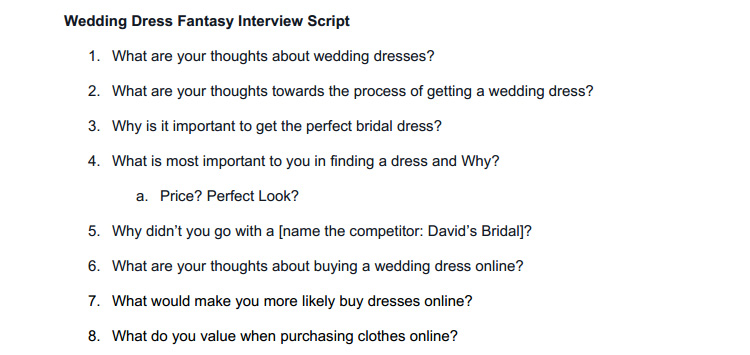

Wedding Dress Fantasy is a custom wedding dress company that’s best known for its eclectic mix of both “modest” and “alternative” bridal wear. Its website generates a good deal of in-bound traffic but experiences a huge site drop-off due too unpleasing aesthetics and poor information architecture.
I, along with the help of my two teammates Nick Loy and Sofie Khan, took on the task of improving the website’s usability and in the process addressing the stakeholder’s business need of increasing 2014’s online business by 20%.
I took ownership of the project’s concept mapping, navigation schema, visual design, user interface and high fidelity mockups. I shared responsibility in the creation of the competitive analysis and wireframes. My fantastic teammates get full credit for the user interviews, persona development and user journey.
We began the project by assessing the capabilities of competing bridal websites to better understand the features expected of modern online wedding dress shops. We recorded the features of multiple bridal websites and then captured key takeaways.
We brainstormed 15+ questions and created an interview script. My teammates then conducted four user interviews to uncover the needs, goals and concerns of future brides regarding the purchasing of wedding dress, especially online.
After conducting user interviews and clarifying user goals, we created two personas to help the team stay focused on our primary users’ needs when making product decisions.
I created a concept map to brainstorm technical solutions to Wedding Dress Fantasy’s business goals. I came up with a few tech/website solutions, but I didn’t stop there. I also considered content strategy, branding and customer service solutions that could also have a tangible effect on online sales.
Wedding Dress Fantasy’s legacy website had over 30 navigation elements across the primary nav, secondary nav and footer. We improved the websites information architecture and decreased the total number of navigation elements to 16.
My teammate Sophie created a user journey to help us better understand how our primary personas interacted with the legacy Wedding Dress Fantasy website as well as the pain points and stumbling blocks they encountered.
At this point I had a good grasp of the user and business needs so I began to ideate a number of responsive website layouts. Sketches helped me avoid getting caught up in the technology and allowed me to focus on the best possible solution.
Sketches defined the layout, but were still pretty bare bones. I improved upon my previous work by fleshing out the user interface of the new dress page in Adobe Illustrator. A new cleaner and more modern visual style was created for the Wedding Dress Fantasy website.
Nick and I created wireframes in Balsamiq to test and evaluate our mobile website design solution. We created each individual wireframe and uploaded them to InVision to create a functional prototype.
View PrototypeWe performed several usability tests using our InVision prototype. We gathered valuable feedback and used it to improve our high fidelity mockups and prototype.